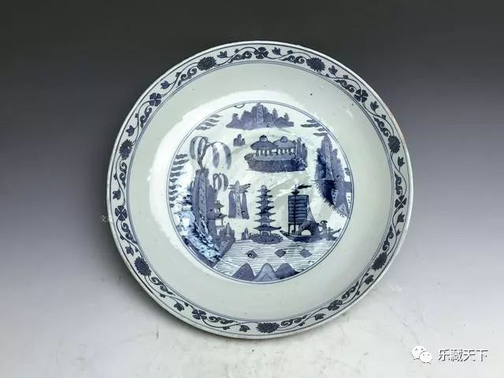

2018-08-14 21:24 乐藏天下
一部电视纪录片《我在故宫修文物》，让神秘的故宫连同神秘的文物医院、文物医生，一起走入大众视野。在金艺桥艺术空间的日常工作中，我也更多了解到了文物修复的社会意义与价值。中国古代人讲究格物，以自身来观物，又以物来观自己。所以文物是有生命的，文物修复的意义就是使其重生。而人在修复文物的过程中，也总要想把自己融入“物”中。
平时在博物馆中所见到的展品，大多数精美绝伦，事实上，还有更多数量的文物艺术品，曾经深埋于地下,当它们重见天日时，却常常已经面目全非: 或残破不全,或挤压变形,有的甚至是一堆破碎的铜片。如果不做修复，它们可能永远弃置角落，沉睡在库房，现实的创伤让它们很难展现历史上曾经拥有的灿烂光辉。
在中国，文物修复技术也是一门古老的传统技艺。早期的文物修复与文物复制技术并存，据史料记载，最早的文物修复可以追溯到春秋战国时期，出土青铜文物表面存在大量补铸、焊接痕迹，都是原始修复技术的佐证;而在欧洲，直到1888年，德国皇家博物馆建立世界上第一个文物保护实验室，标志着现代科学技术正式进入文物保护领域。
在世界各国为文化遗产保护制定和完善文物保护法令和法规的同时，采用科学技术方法和手段保护文化遗产的文物保护科学技术和相关组织也得到快速发展。1921年英国大英博物馆建立文物保护实验室，1930年法国卢浮宫建立文物保护实验室，1945年波兰哥白尼大学设立文物保护专业，1946年在法国成立国际博物馆协会， 1950年英国伦敦成立国际文物保护协会，1959年在意大利罗马成立国际文化遗产保护中心……历经一个多世纪发展，文物保护中科学技术的应用也越来越广，在考古现场文物保护、馆藏文物环境检测、文物病害分析检测、文物保护修复等多个领域都不断有新的仪器设备和分析方法涌现，产生了很多具有意义的成果，有力地推进了文物保护科技的发展。
文物艺术品凝结着人类的智慧和精华，蕴涵了巨大的社会价值，现代文物修复技术继承和发扬了传统修复工艺，融合了现代修复理念、材料、技术工艺，创造了全新的再生价值：其一是美学价值，也就是审美价值，是艺术品的内在价值。文物艺术品看上去让人产生幸福感，带来好心情，进而净化灵魂、陶冶性情，这种享受是心灵共鸣的享受。 接触艺术品，也是在接受人类精神的洗礼，身心沐浴其中，感受蕴含其中的激情，从而激发创新力，更加懂得爱，懂得生活，懂得生命的价值，激励自己投身现实中的事业，奋发向上，积极有为。
其二是文物艺术品的文化价值，文化孕育艺术。一个区域的艺术受到自然、人文、传统的影响而各有体系。从承载文化的角度看，文物艺术品是最为贴近文化发展脉络的承载形式之一。好的文物艺术品可以超越区域、言语的障碍，成为不同文化体系间沟通交流的鲜活素材。
其三是文物艺术品的经济价值，艺术品经济价值必须以艺术品的美学价值为基础。没有内在的美学价值就无法称之为艺术品，艺术品的经济价值便无从谈起。艺术品作为艺术劳动的成果，艺术家所赋予作品的内涵越丰富、越生动、艺术语言表达得越独特、艺术技巧的难度越大，其作品的现实经济价值就越高。目前，艺术品市场的发展已成为我国整体市场经济框架下不可或缺的一部分，文物艺术品修复后的经济价值，常常增值为其修复之前的5倍到10倍，已是业界常见惯例。
其四是文物艺术品的历史价值，文物艺术品都是特定历史的承载、见证、传续。文物艺术品不仅成为当时人们学习知识和娱乐生活的重要组成部分，也为今天的人们解读当时的历史，提供了一把重要的钥匙。因此，文物艺术品自身的历史价值极其珍贵，有很多是无法用价格来标定的“无价之宝”。
其五是文物艺术品的社会价值，精神生产应以物质生产为基础，时代与环境也必然影响创作。任何一件文物艺术品，都是当时的艺术家对时代的思考和感受，彰显了彼时代的精神风貌，反映了所处社会的意识形态，这种创造性不仅丰富了社会产品，而且使社会的发展趋向于和谐和美。
科技与艺术的融合，创造了文物艺术品修复的重生价值，“艺术越来越科技化，科技越来越艺术化，两者在山麓分手，有朝一日，将于山顶重逢。”这是福楼拜当年的预言，在文物艺术品修复事业中，我们不仅见证了科技与艺术融合的实践，也看到了创伤累累的文物艺术品经过“文物医院”的精心“疗治”后再现往日风貌，其间的幸福无以言表。